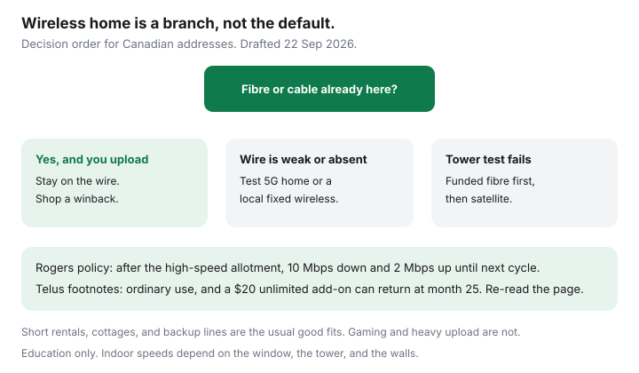

Internet · Canada
5G Home Internet vs Fibre or Cable in Canada: When Wireless Home Plans Save Money
Canadian carriers advertise 5G home internet beside fibre prices, then the fine print does the real work: a high-speed allotment, a fair-use clause, and a gateway that only goes as fast as the tower you can see from a window. Wireless home internet is a useful product. It is not a cheaper fibre plan. This guide is the decision, for households who rent, who are between homes, or who live where the wire has not arrived. Education only.
Disclosure: Education only. Wireless home and wireline internet plans are offer types. Saving Optimizer has no Rogers, Telus, Bell, Xplore, or Starlink partnership. Speeds indoors vary with the building. Confirm the address tool and the data policy before you order.
Key takeaways
- 5G home internet is a fixed wireless product with its own gateway. It is not your phone’s hotspot, and it is not fibre.
- Rogers’ wireless-home data policy cuts speeds to 10 Mbps down and 2 Mbps up after the package’s high-speed allotment, until the next bill cycle. A 2026 third-party reading listed 200 GB, 600 GB, and an unlimited-at-plan-speed tier. Confirm the card.
- Telus wireless home internet markets unlimited data. Footnotes surfaced 22 Sep 2026 still limit “ordinary” use and show a $20 unlimited add-on that can return at month 25 after a two-year credit.
- Best fits: a rural gap with a strong tower, a short rental, a cottage, or a backup. Poor fits: heavy upload, competitive gaming, and any address that already has decent fibre or cable.
- Put the gateway in a window facing the tower, ethernet the desk, and do not hide the unit in a basement utility closet.
What 5G and fixed wireless actually deliver indoors
The signal has to get through glass, brick, foil-backed insulation, and the neighbour’s building. A coverage map that is green at the curb can be mediocre in a concrete condo. Carriers sell this as “home internet” because the gateway stays at the service address and the plan is priced like a household line. The physics is still radio.
Expect latency higher and less even than fibre. Video calls can work well and then stumble when the sector is busy at 8 p.m. Uploads are the first disappointment: sending a laptop backup while someone is on camera is what symmetrical fibre is for. If your quote does not list an upload, ask. If the agent only repeats the download headline, you do not have a specification.
Fixed wireless from a regional provider or from Xplore is the same family with a different tower. Xplore has advertised fibre in some towns and fixed wireless up to 500 Mbps in others. That is terrestrial, and it belongs on the rural sequence before anyone buys a satellite dish. National Broadband Map and funded builds first. A 5G gateway second. Starlink when the sky is the only path.

Data caps, fair use, and peak-hour slowdowns to verify
Read the policy, not the word “unlimited” on the banner.
| Product | What the paperwork has said | What to ask |
|---|---|---|
| Rogers 5G Home Internet | Official data policy: after the high-speed allotment, speeds drop to 10 Mbps down and 2 Mbps up until the next cycle. Video streams may be optimized. A 2026 third-party reading listed Essentials at $60 with 200 GB, Popular at $70 with 600 GB, and Ultimate at $100 with unlimited data at plan speeds. | Which allotment is on this address, and what upload you get before the cap. |
| Telus Wireless Home Internet | Marketed as plug-in internet on the Telus 5G and LTE network, in select areas. A footnote surfaced 22 Sep 2026: a $20 unlimited-data credit for new customers on a two-year agreement at 500 GB or higher; regular unlimited add-on then described as $20 a month from month 25. Another footnote: ordinary use only; hosting, resale, or excessive capacity can be restricted. | Whether “unlimited” on your plan is the credit, the add-on, or a fair-use clause. What happens at month 25. |
| Fibre or cable at the same unit | Wireline plans from the big brands are generally sold as unlimited usage. The limit that matters is upload and Wi-Fi, not a 200 GB bucket. | The 24-month total after credits, from the address sheet. |
A household of two people streaming in the evening can cross 200 GB without trying. A 10/2 slowdown is enough for email and not enough for two video calls. If the plan you can afford is the small bucket, wireless home is a cottage product, not a family primary line.
Best-fit homes: rural gaps, rentals, and short stays
Wireless home earns its keep in four situations.
- The wire is bad or absent. Older rural copper, a long farm lane, a new subdivision still waiting for the drop. Test the gateway for a few evenings before you cancel anything else. Where the provider offers a satisfaction window, use it.
- You will not be there long. A six-month rental, a parental leave in another city, a place you will sell. Skipping a two-year wireline term can be worth a slower radio, if the ETF you avoid is real. Check the wireless plan’s own term before you congratulate yourself.
- The building will not allow a new install. Some landlords and stratas block drilling. A window gateway that does not touch the riser is sometimes the only lawful install. Confirm the lease anyway.
- You want a backup, and you will pay for one. A second line during a fibre cut is insurance. It is not a discount.
It is a poor primary line when PureFibre or solid cable is already at the panel. In Alberta and B.C., run the PureFibre check first. In Ontario and Québec, a cable or Bell fibre quote will usually beat a radio on upload. Do not let a wireless headline talk you out of a wire you already have.
When fibre or cable still wins for work uploads and gaming
Two tests, on a normal weekday evening:
- A video call plus a cloud-photo upload. If the call stutters only on the wireless gateway, the wireline upload is the product you need.
- A game you care about, on ethernet, not on Wi-Fi. Jitter and latency are the complaint, not the download banner. Fibre and cable are boring in the way you want.
The household speed guide is the worksheet. Most homes do not need a gigabit. They need a stable 50 to 300 Mbps and a Wi-Fi layout that reaches the office. Buying 5G “because it says 500” and then working from the basement is how the bill stays high and the calls stay bad.
Install, router, and indoor coverage checklist
- Place the gateway in a window on the side of the home that faces the tower, not in a metal entertainment unit.
- Run ethernet to the work desk. Wi-Fi from a window unit will not cross a brick bungalow cleanly.
- If you add mesh, turn off the second Wi-Fi radio or bridge the gateway so two networks are not fighting. Mesh is your gear; the 5G receiver is theirs. See pods versus mesh.
- Ask what the return charge is if you leave. Equipment non-return is still a lawful fee when the contract says so, even after the June 2026 activation-fee ban.
- After 12 June 2026, a no-visit activation fee should not appear. A technician who mounts an outdoor receiver can still be billed. Name the fee before you agree.
A decision tree: wireless home versus a wire
- Does fibre or cable already serve this unit at a 24-month total you can live with? If yes, and anyone uploads for work, stay on the wire and shop a winback.
- If the wire is weak, is there a funded build or a local fixed-wireless provider with an evening speed you have tested? If yes, price that before a national 5G brand.
- If the tower in the window is strong, price Rogers, Telus, or Bell wireless home at this address. Write the allotment, the month-25 price, and the term.
- If the window test fails, stop. Satellite is the rural fallback in the Starlink guide, not a default city product.
- Re-check in 12 months. Towers improve, and a fibre drop can land on a street that was wireless-only when you moved in.
Sources & date stamps
- Rogers, Wireless Home Internet / 5G Home Internet data policy (rogers.com support terms) — 10 Mbps down / 2 Mbps up after the high-speed allotment; video optimization. Read 22 Sep 2026.
- internetadvice.ca Rogers review — third-party 2026 card reading: 5G Home Internet Essentials $60 / 200 GB, Popular $70 / 600 GB, Ultimate $100 unlimited at plan speeds. Not a Rogers tariff. Re-check rogers.com.
- Telus wireless home internet page footnotes, as surfaced 22 Sep 2026 — select areas; $20 unlimited-data credit on qualifying two-year agreements and a $20 add-on from month 25; ordinary-use limits. Re-read telus.com before you order.
- Xplore and rural sequencing — see the Starlink guide’s 21 Sep 2026 notes. ISED’s National Broadband Map remains the “is fibre coming?” check, not a speed test.
Frequently asked questions
Is 5G home internet the same as a phone hotspot?
No. It is a home plan with its own gateway, usually fixed to the service address, with its own fair-use or high-speed allotment. A phone hotspot shares your mobile bucket and is a poor substitute for a household. Read the home-internet policy, not the wireless-phone one.
What happens when Rogers 5G Home Internet passes its high-speed allotment?
Rogers' wireless home data policy says that once you pass the package allotment, download and upload speeds are reduced to 10 Mbps and 2 Mbps until the next bill cycle. Video streams can also be optimized. A third-party 2026 reading listed Essentials at 200 GB, Popular at 600 GB, and Ultimate as unlimited at plan speeds. Confirm the card at your address.
Does Telus wireless home internet have a data cap?
Telus markets unlimited data on wireless home internet, with footnotes. One footnote surfaced 22 Sep 2026 says a $20 unlimited-data credit can apply for new customers on a two-year agreement at 500 GB or higher, and that the regular unlimited add-on was $20 a month from month 25. Another footnote limits service to an ordinary range of use and allows Telus to restrict service that consumes excessive capacity. Read both before you treat unlimited as a promise.
When is fibre or cable still the cheaper choice?
When it is already at the unit and someone in the home uploads for work, games online, or runs cloud backup while others are on video calls. Wireless home latency and evening slowdowns are coverage problems a faster headline will not fix. Price the wireline 24-month total first.
Can I use 5G home internet as a backup and keep fibre?
Yes, if you will actually pay for two lines. A backup gateway helps during a fibre cut. It is a waste if it sits in a closet and the main bill was the problem. For a cottage or a short rental, wireless home is often the primary line, not a backup.